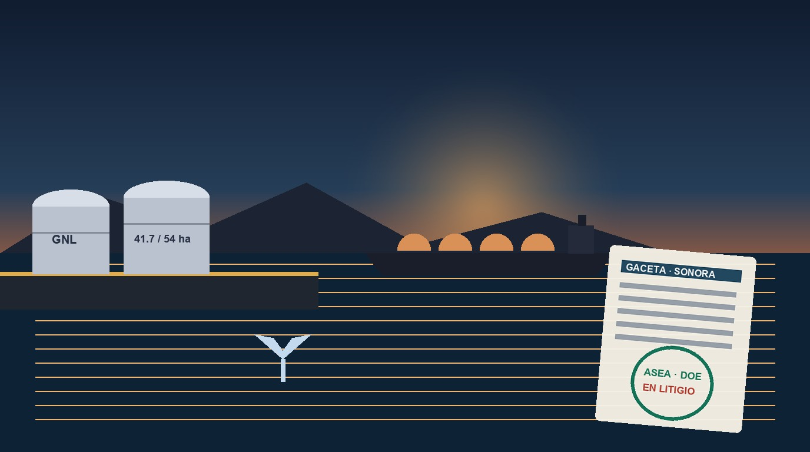
Ilustración provisionalGuaymas y la Gaceta Parlamentaria: el proyecto de gas y su revisión ambiental
¿Qué consta en la Gaceta Parlamentaria y en documentos oficiales sobre el proyecto de gas en Guaymas y su impacto ambiental?
El recorrido de esta investigación
Tres pasos: entender el caso, comprobar sus números y revisar los documentos que lo sostienen.
- Entiende el casoQué pasó, cuánto dinero involucra, quién interviene y qué falta saber.Leer el caso ➔
- Explora los númerosCuánto recibe cada ramo, Medio Ambiente y Energía incluidos, con su fuente oficial.Ir a Números ➔
- Revisa la evidenciaCrisis ambientales y el presupuesto de la ASEA: los documentos que sostienen el caso.Abrir el Inspector ➔
📝 Lectura breve
El caso en cinco preguntas, con sus documentos. Más abajo, la lectura ampliada: las cuentas paso a paso.
- Qué pasó
El proyecto AMIGO busca instalar una planta de licuefacción de gas natural en el Parque Industrial Pesquero «General Rodolfo Sánchez Taboada», en Guaymas, Sonora. En tribuna del Congreso de Sonora y en redes se señaló la entrega en comodato gratuito de 54 hectáreas de suelo público para procesar gas de Texas y enviarlo a Asia, y el 12 de febrero de 2026 diputados presentaron en la Gaceta Parlamentaria No. 2104 un exhorto a la ASEA, al INECC y a la Semarnat para revisar los tres proyectos de gas del Golfo de California (Saguaro, AMIGO y Vista Pacífico). El 21 de octubre de 2026 la Secretaría de Energía reportó 41.7 hectáreas, hasta 60 buques al año (el 4 % del tránsito de la zona) y 290 mil m³ de almacenamiento, y la Presidenta informó que la obra está detenida por amparos mientras se revisan de nuevo los impactos ambientales.
- Cuánto dinero
- 41.7 ha superficie del proyecto en Guaymas según la Secretaría de Energía (21-10-2026) oficial
- 12.3 ha diferencia frente a las 54 ha señaladas en tribuna (54 − 41.7) derivado
- 60 buques al año máximo de buques metaneros (4 % del tránsito de la zona) y 290 mil m³ de almacenamiento oficial
- $353.5 mdp presupuesto 2026 de la ASEA (Ramo 16, unidad G00), la agencia que revisa el impacto ambiental oficial
- Sin publicar contrato de comodato sobre el predio en Guaymas y resolutivo ambiental pendiente
- Quién interviene
La empresa Epcilon LNG LLC promueve el proyecto AMIGO; el Departamento de Energía de EE. UU. autorizó la exportación de gas (Orden 4629); la Secretaría de Energía y la ASEA (Ramo 16) intervienen en el ámbito federal; en el Congreso de Sonora se presentó el exhorto en la Gaceta Parlamentaria No. 2104.
- Qué documento lo acredita
- Presidencia de la República: versión estenográfica del 21-10-2026 (Secretaría de Energía, proyecto en Guaymas) ↗
- Congreso del Estado de Sonora: Gaceta Parlamentaria No. 2104, sesión del 12-02-2026 (exhorto sobre Saguaro, AMIGO y Vista Pacífico) ↗
- Departamento de Energía de EE. UU.: Orden DOE/FE 4629 (08-12-2020), expediente 20-31-LNG (Epcilon LNG LLC) ↗
- Presupuesto de Egresos de la Federación 2026, Ramo 16 Medio Ambiente y Recursos Naturales (ASEA, PROFEPA, CONANP e INECC) ↗
- Qué falta saber
El contrato de comodato sobre el predio en Guaymas no está publicado por el Gobierno de Sonora (pendiente en el Registro), y el resolutivo de impacto ambiental de la ASEA tampoco se pudo abrir desde la plataforma. Tampoco se ha publicado cuánto pagaría el proyecto en impuestos y derechos ni qué parte se quedaría en Sonora.
🖼️ Otras auditorías en imágenes
Cómo verificamos: cada cifra lleva su fuente oficial y su estado: oficial derivado pendiente. Las imágenes son ilustraciones, no evidencia. Lee la metodología y las novedades ➔
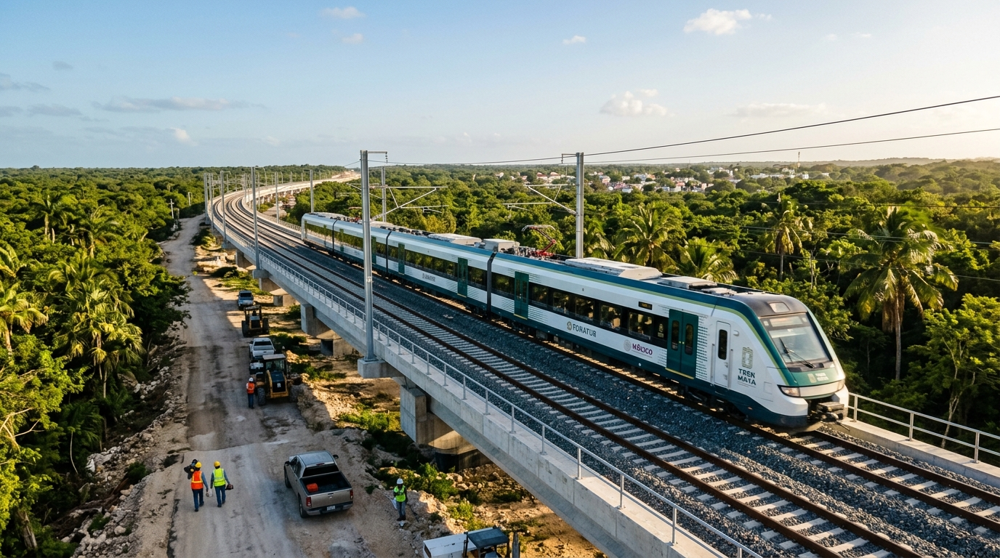
🚅 Megaobra ferroviaria · FONATUR y Tren MayaTren Maya 🏭 Refinación · Pemex, Paraíso, TabascoRefinería Olmeca (Dos Bocas) ✈️ Infraestructura aeroportuaria · DefensaAeropuerto Internacional Felipe Ángeles (AIFA) 🚄 Transporte ferroviario · SICTTren Interurbano México-Toluca «El Insurgente»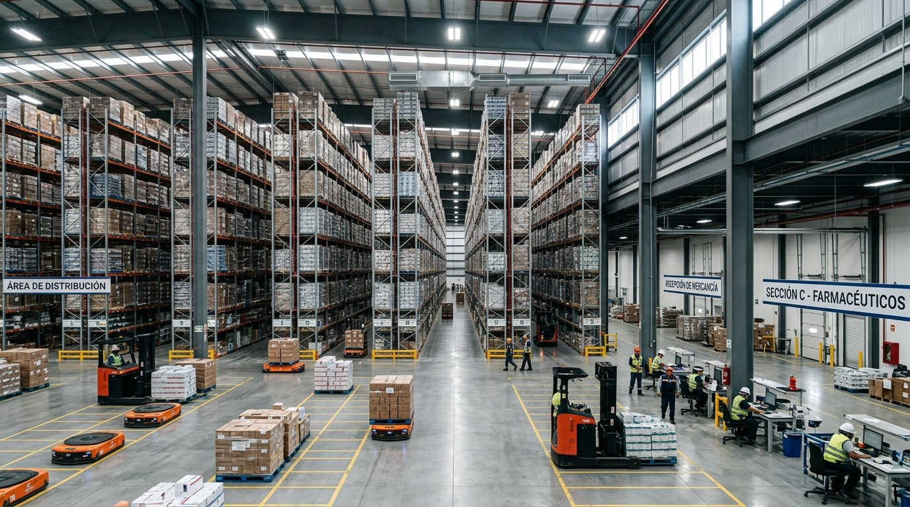
💊 Almacén de medicamentos · Birmex, HuehuetocaMegafarmacia del Bienestar (Huehuetoca)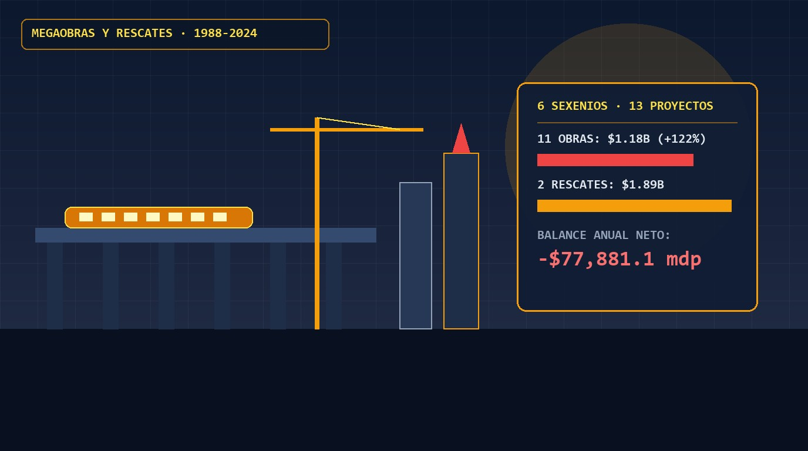
🏗️ Inversión pública y rescates · 1988–2024Inversión en megaobras y rescates: 11 obras, 2 rescates y 6 sexenios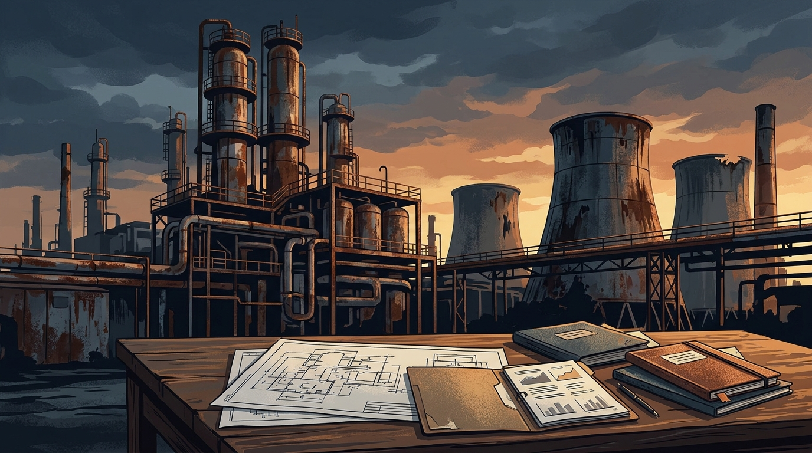
🏭 Megaobras y compras de Pemex · Coatzacoalcos, VeracruzPlantas de fertilizantes Agronitrogenados ⛏️ Megaobras y compras de Pemex · Baja California Sur y MichoacánCompra de Grupo Fertinal 🗼 Obras conmemorativas · Paseo de la Reforma, CDMXEstela de Luz (Bicentenario) 📡 Seguridad e inteligencia · Plataforma México, CDMXEl Búnker de Seguridad de García Luna (SSPC)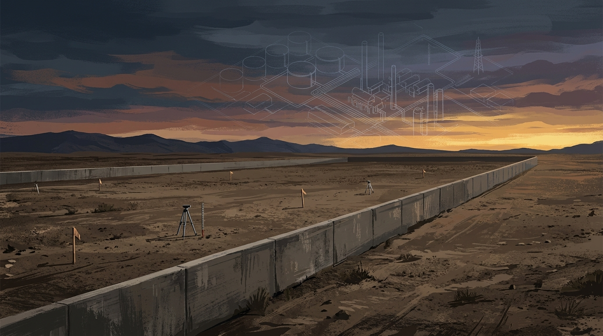
🧱 Proyectos cancelados · Atitalaquia y Tula, HidalgoRefinería Bicentenario en Tula (Barda Perimetral) 💻 Equipamiento educativo · SEP, 2001–2011Programa Enciclomedia 🏦 Rescate financiero · FOBAPROA-IPAB y Ramo 34 (1998–2025)FOBAPROA / IPAB (Rescate Bancario de 1998) 🛣️ Rescate financiero · FARAC y FONADIN en Banobras (1997–2025)FARAC (Rescate Carretero de 1997) 🏛️ Costo financiero de la deuda · PEF 2026Los intereses de la deuda pública 🏥 Gasto federalizado · Ramo 33Ramo 33: el dinero para estados y municipios 🧱 Inversión privada y obra pública · Nuevo LeónCiénega de Flores: el dinero público alrededor de LEGO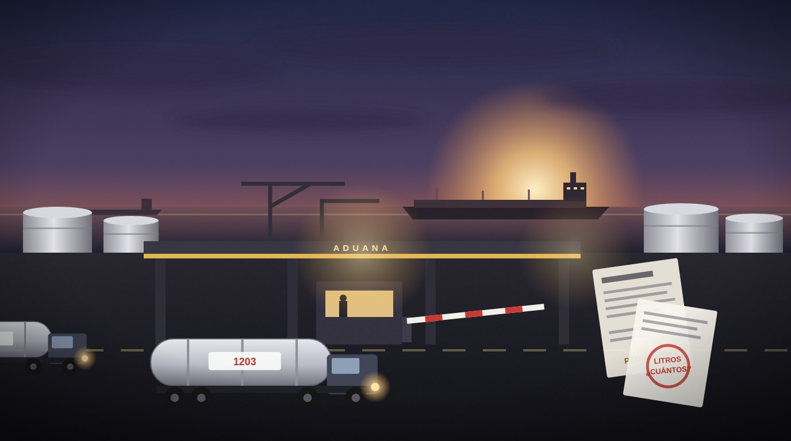
⛽ Evasión en combustibles · IEPS, aduanas y SATHuachicol fiscal: el impuesto que no entra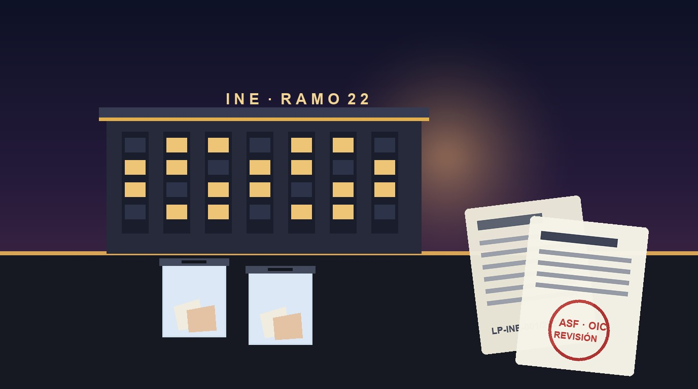
🗳️ Órgano autónomo · Ramo 22, ASF y licitacionesEl INE: su presupuesto, lo auditado y los contratos en revisión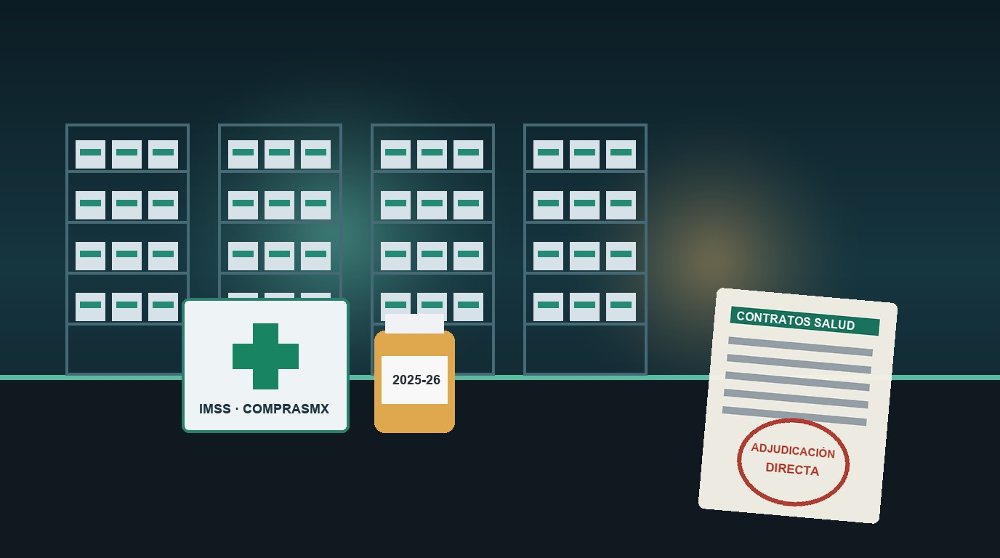
💊 Contratos de salud · IMSS, IMSS-Bienestar y BirmexCompras de medicamentos y contratos del sector salud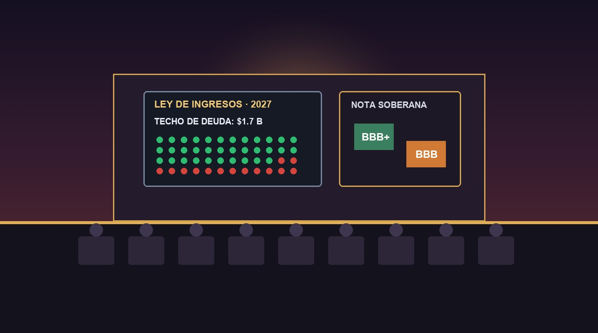
🧾 Paquete Económico 2027 · Congreso, deuda y calificación BBBDiputados aprobó la deuda de 2027: Ley de Ingresos y nota soberana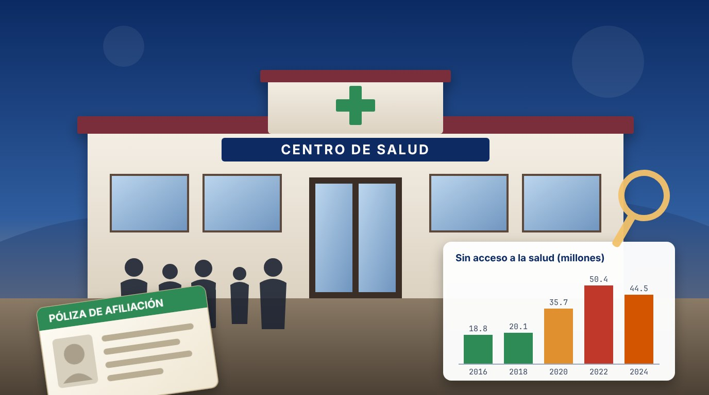
🏥 Salud pública · Seguro Popular, INSABI e IMSS-Bienestar (2004–2024)Seguro Popular: 53.5 millones de afiliados y lo que pasó después